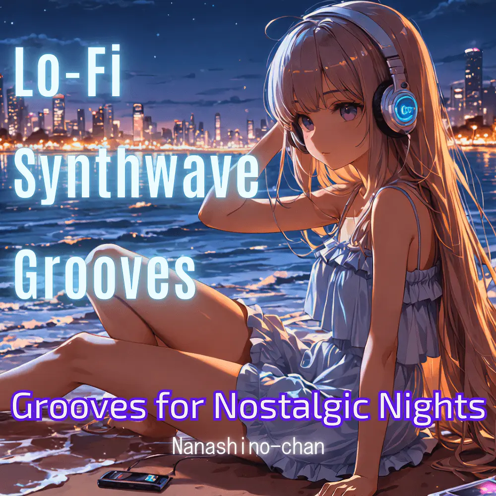

Lo-Fi · Synth · Electronic · Instrumental
Retro Pulse: Lo-Fi Synth Grooves from the Night
Nanashino-chan
Nanashino-chanの「Retro Pulse: Lo-Fi Synth Grooves from the Night」。Lo-Fi / Synth / Electronic / Instrumentalを楽しめる全24曲のインストゥルメンタル作品です。「Midnight Reflections / Neon Dreamscape」などを収録。気になる曲を試聴して、配信サービスでお気に入りを見つけてください。
2025-04-30 リリース · 24 曲 · Instrumental
アルバムを試聴
気になる音楽を、ここから。
曲を選ぶまでジャケットを表示します。試聴にはYouTubeを使用します。
YOUTUBE PREVIEW
試聴する曲を選んでください
曲を選ぶまでジャケットを表示します。試聴にはYouTubeを使用します。
再生できない場合は、配信サービスでアルバムや曲を開いてください。
配信サービスでアルバムを探す
「検索」のリンクは検索結果を開きます。サービス内でアルバムや曲を選択してください。
収録曲一覧 24
- 01Midnight Reflections
- 02Neon Dreamscape
- 03Echoes of the 80s
- 04Cosmic Ride
- 05Vaporwave Streets
- 06Electric Twilight
- 07Digital Sunset
- 08Chromatic Waves
- 09Retro Vibes
- 10Glowing Horizons
- 11Lunar Voyage
- 12Pixelated Memories
- 13Analog Nights
- 14Starry Synths
- 15Cinematic Breeze
- 16Faded Signals
- 17Time Traveler's Groove
- 18Retro Pulse
- 19Electric Moonlight
- 20Synthesizer Dreams
- 21Neon Noir
- 22Nostalgic Drive
- 23Cyber City
- 24Endless Nightfall
SNSで使いたい音源を探す
「Nanashino-chan ＋ 曲名」をコピーして、SNSアプリの音源検索に貼り付けてください。音源の表示は地域やアカウントにより異なります。コピー機能は利用許諾を付与するものではありません。